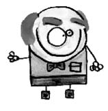
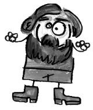
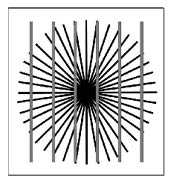
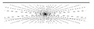

James Mckeen Cattell (1860-1944)
Dünyadaki ilk psikoloji profesörü. Yirmi sekiz yaşında profesör oldu.
Uyuşturucu maddelerle yaşadığı kişisel bir tecrübesinin ardından psikoloji ile ilgilenmeye başlayan Cattell, Wundt’un öğrencisidir.
1888 yılında Pennsylvania Üniversitesi Cattell’ı dünyada ilk kez ilan edilen şekliyle psikoloji profesörü olarak atadı. Bu tarihten önce psikologlar görevlerini felsefe bölümünden alıyorlardı. Cattell’ın bu şekilde görevlendirilmesiyle psikoloji bağımsız bir bilim olduğuna dair ilk akademik onayı almış oldu.
Amerikan psikolojisinin işlevsel ruhunu en iyi yansıtan psikologlardan biri olan Cattell, ilk psikolojik testlerini geliştirerek psikolojiye önemli katkılar sağlamıştır.
“Zeka testi” kavramını ilk defa kullanan da odur.

Heinrich Ewald Hering (1866-1948)
Alman fizyolog. Bir kasaba rahibinin oğlu olan Hering’in amcası bir homeopat yani hastalığı bir benzeri ile tedavi eden bir doktordu. Örneğin, kahve kalp çarpıntısı ve uykusuzluk yapar. Bu nedenle kalp çarpıntısı ve uykusuzluğa sebep olan bir hastalık kahvenin yüksek sıvılaştırılmış bir formu ile tedavi edilebilir gibi... Hering, “Hering İllüzyonu”, “Uzaysal Algı Teorisi” ve “Karşıt Süreç Teorisi” gibi kavramları da ortaya atan kişidir. Hering illüzyonunda düz çizgiler bombeli gibi görülür.

Neymiş algı yanılsamaları…
Algı yanılsamaları illüzyon ve halüsinasyon diye ikiye ayrılır.
Özellikle Sermet Erkin, Mandrake ve David Copperfield gibi sihirbazlar aracılığıyla da fazlaca duyduğumuz illüzyon, var olan şeyleri farklı şekilde algılamaktır. Bu yüzden illüzyona “göz yanılması” dendiği de olur.
Suya batırılan bir kaşığın ya da kalemin kırıkmış gibi görünmesi, art arta gelen sabit resimlerin hareket ediyormuş gibi algılanması, arabada giderken elektrik direklerinin geriye gidiyor zannedilmesi, enine çizgili kıyafetlerin şişman, boyuna çizgili kıyafetlerin uzun ve zayıf göstermesi, yerle göğün ufukta birleşiyormuş gibi durması, tren raylarının uzaktan bitişik gibi görünmesi, fiziksel illüzyona günlük hayattan verilebilecek örneklerdir.


Bir de psikolojik illüzyon vardır. Portmantoda asılı duran palto ve şapkayı insana benzetmek, yerdeki hortum ya da ipi yılan zannetmek psikolojik illüzyon örnekleridir.
Tansu Çiller’in “Hasülü... halasü... hasüsü…” şeklinde dağarcığımıza yerleştirdiği “halüsinasyon” kavramı da bir tür algı yanılmasıdır. İllüzyon herkeste görülürken halüsinasyon ya da diğer adıyla “sanrı” akıl hastalarında, uyuşturucu bağımlılarında, alkol kullananlarda, yüksek ateş, aşırı korku, epilepsi, beyin zehirlenmesi, beyin tümörü vb. durumlarda ortaya çıkar.
Yani illüzyon, olan şeyleri farklı görmek; halüsinasyon ise, olmayan şeyleri görmek şeklinde kısaca tanımlanabilir.
– Hüseyin o yanındaki kim?
– Kim, hangi yanımdaki?
– Şu, sağ yanındaki.
– Süleyman Abiyi mi diyorsun?
– Ne Süleyman Abisi, şu sarışını diyorum.
– Ha, o zaman Süleyman Abi olamaz. O tek kaş ve neredeyse siyahî dediğimiz bir abimiz. Kim o zaman?
– Şu sağ kolunu omzuna attığın sarışını diyorum Hüseyin.
– Ne, sağ kol mu? Benim sağ kolum üç sene önce bir trafik kazasında koptu ya Neriman. Ama doğru, sen o günden beri kendine gelemedin.
– Hangi kaza Hüseyin?
– Hüseyin mi? O da kim? Ablacığım sen otur dinlen istersen, yoruldun di mi bayram alışverişinde?
– Bayram mı? Bugün bayram mı?
– Ah kıyamam abim benim.
– Abi mi? Noluyor, ben kimim?
– Korkma amca, ben şimdi bir taksi çağırıp seni evine yollarım. Amca, amca! Bayıldın mı? Kendine gel!
– Oh neyse atlattık sevgilim, ben şimdi hanımı eve götüreyim, evde halüsinasyondu falan diye bağlarım, yarın görüşürüz.
Gibi…